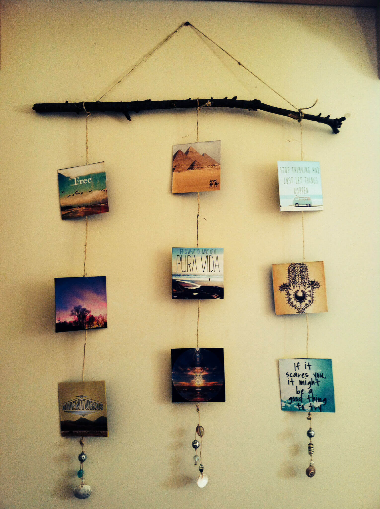

Popular DIY Tutorials
Paper Pen Stand 📝

Materials: Newspaper, glue, cardboard, colours
- Roll newspaper into sticks.
- Cut a cardboard circle for base.
- Stick the rolls around the base.
- Let it dry and then colour it.
Wall Hanging 🎨
Materials: Cardboard, coloured paper, thread, glue
- Cut cardboard into shapes (star, heart, circle).
- Cover shapes with coloured paper.
- Make small holes and insert thread.
- Hang it on the wall.
Bottle Flower Vase 🌺

Materials: Old glass bottle, thread, glue, flowers
- Clean the bottle and dry it.
- Apply glue and wrap thread around it.
- Let it dry and keep flowers inside.